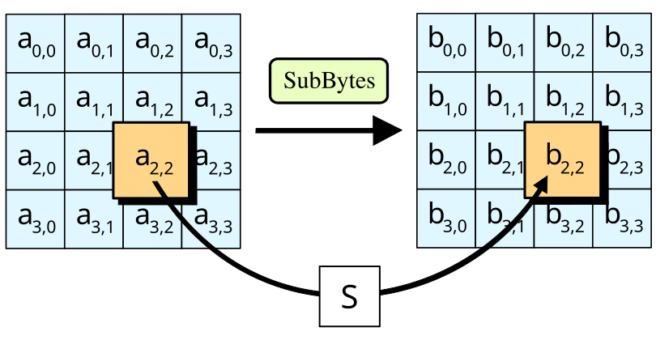
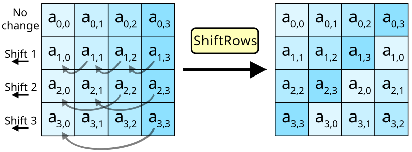
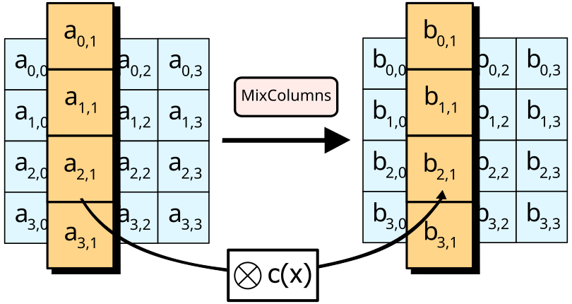
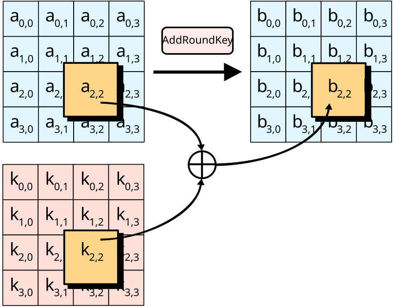
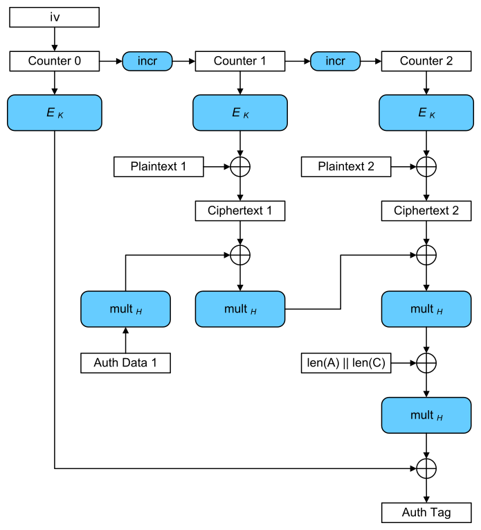

SubBytes
The S-box takes the multiplicative inverse in GF(2⁸), with zero mapped to zero at that step, then applies an affine transformation. For example, 0x53 maps to 0xed. InvSubBytes uses the inverse table.

Trace one AES block, compare seven modes, and see where IVs, counters, tweaks and authentication tags enter.
AES is a keyed permutation on one 16-byte block. A mode defines how to use it on a message or a storage unit.
| Variant | Key length | Block length | Rounds |
|---|---|---|---|
| AES-128 | 128 bits | 128 bits | 10 |
| AES-192 | 192 bits | 128 bits | 12 |
| AES-256 | 256 bits | 128 bits | 14 |
ChaCha20 is a stream cipher with a keystream interface. AES exposes a forward and an inverse permutation. A mode such as CTR builds a keystream from repeated calls to the forward AES permutation.
Read the source: FIPS 197: AES ↗ · RFC 8439: ChaCha20-Poly1305 ↗ · Boneh–Shoup: A Graduate Course in Applied Cryptography ↗
Track the 16-byte state through key expansion, reversible round transformations and the inverse cipher.
AES stores the block as a 4×4 byte matrix in column order, state[row,col] = input[4·col+row]. The first four bytes fill the first column. KeyExpansion splits the master key into 32-bit words and generates Nr+1 round keys, each 16 bytes. Every Nk words, RotWord rotates one word, SubWord applies the S-box, and Rcon adds a round constant before the XOR with the word Nk positions back. AES-256 also applies SubWord halfway through each eight-word group. Here Nk is 4, 6 or 8, and Nr is the round count.
Each arrow acts on the current state. The inverse cipher uses the same expanded round keys in reverse order. The encryption final round and the corresponding inverse boundary omit column mixing.
The S-box takes the multiplicative inverse in GF(2⁸), with zero mapped to zero at that step, then applies an affine transformation. For example, 0x53 maps to 0xed. InvSubBytes uses the inverse table.

A byte stays in its row but can move to a different column. This lets the next column-mixing step spread its influence across columns over successive rounds. InvShiftRows rotates right by the same offsets.

Multiply each column by the same invertible matrix in GF(2⁸), modulo x⁸+x⁴+x³+x+1. The first output byte is (02·a₀) ⊕ (03·a₁) ⊕ a₂ ⊕ a₃, with hexadecimal coefficients. The other rows are cyclic rotations of those coefficients. InvMixColumns uses the inverse matrix.

XOR is its own inverse. The initial key addition precedes all rounds; the last round still adds a key and skips MixColumns.

In NIST’s example, XOR the input with round key 0. The first byte is 0x6b ⊕ 0x2b = 0x40. Read the full state column by column. Compare the initial state and each step of round 1 against the intermediate values, then check the final ciphertext.
Read the source: FIPS 197: AES ↗ · NIST AES-128 intermediate values ↗
The same block cipher can provide very different guarantees depending on what surrounds it.
| Mode | Public input | Length handling | What the mode provides |
|---|---|---|---|
| ECB | None | Whole blocks | Independent blocks reveal repeated patterns |
| CBC | Unpredictable IV | Whole blocks | Ciphertext chaining, confidentiality only |
| CTR | Distinct counter blocks | Truncate last keystream block | Parallel keystream, confidentiality only |
| CFB | Unpredictable IV | Whole segments | Ciphertext feedback, confidentiality only |
| OFB | Unique IV | Truncate last keystream block | Keystream feedback, confidentiality only |
| GCM | Unique nonce | Truncate last keystream block | AEAD with tag and AAD |
| XTS | Data-unit number | Ciphertext stealing | Length-preserving storage confidentiality |
In the formulas, E_K and D_K are the forward and inverse AES permutations under key K. P[i] and C[i] are plaintext and ciphertext blocks or segments, ⊕ is XOR, || concatenates bit strings, and MSB_n / LSB_n take the first / last n bits. Indices start at 1 unless indicated. Figures are unmodified Wikimedia Commons originals; the references below each mode link to the technical standards.
Read the source: SP 800-38A: ECB, CBC, CFB, OFB and CTR ↗ · SP 800-38D: GCM ↗ · SP 800-38E: XTS-AES ↗
Feed every plaintext block into AES independently under the same key.
The input to the mode consists of full 16-byte blocks. Both directions can process blocks in parallel. Under one key, equal plaintext blocks give equal ciphertext blocks at any position, so repeated fields or image patterns remain recognizable.
The mode has no IV or authentication. An attacker can also reorder or substitute entire blocks. ECB is a useful way to recognize a single-block test vector, and unsuitable for general message encryption.
Read the source: SP 800-38A: ECB, CBC, CFB, OFB and CTR ↗
Mix in the previous ciphertext before encrypting the next block. The first block uses an IV.
Use a fresh unpredictable 16-byte IV. It may be public and needs integrity protection. CBC consumes full blocks. A protocol can use PKCS#7, where N padding bytes each equal N, including an entire padding block for already aligned plaintext. The padding convention belongs to the protocol.
Encryption waits for C[i−1]. Decryption can run in parallel once the ciphertext blocks are available. Changing C[i−1] flips chosen bits of P[i], and distinguishing padding errors can create a padding oracle. Legacy protocols need an authentication design that validates the record before exposing plaintext or padding outcomes.
Read the source: SP 800-38A: ECB, CBC, CFB, OFB and CTR ↗
Encrypt a sequence of distinct counter blocks to obtain a keystream.
Both sides call AES encryption. The last partial block uses only the matching prefix of the keystream. The counter layout and byte order are defined by the protocol. Independent AES calls allow parallel processing and random access when the block index is known.
Every full counter block T[i] must be distinct under the same key, across all messages. Prevent overlap and wraparound. Reuse gives C ⊕ C′ = P ⊕ P′ on overlapping bytes. CTR alone also lets a ciphertext bit flip change the same plaintext bit.
Read the source: SP 800-38A: ECB, CBC, CFB, OFB and CTR ↗
Encrypt the feedback register and feed the ciphertext back into that register.
The segment size s is part of the mode, for example 8 or 128 bits. CFB-128 reduces the register update to R[i+1] = C[i]. Process whole s-bit segments without block padding when the message is already segment-aligned. Use an unpredictable 16-byte IV.
Both directions use AES encryption and feed back ciphertext, even during decryption. Errors affect the current plaintext segment and can propagate while the altered ciphertext remains in the register. CFB provides confidentiality only.
Read the source: SP 800-38A: ECB, CBC, CFB, OFB and CTR ↗
Feed back the AES output itself. Plaintext and ciphertext stay outside the feedback loop.
Use a unique 16-byte IV per key, following the standard’s IV-generation requirements. Both directions use AES encryption. Like CTR, the final block can be truncated to the message length. Unlike the independent counters in CTR, OFB must generate keystream blocks sequentially.
Reusing an IV repeats the keystream. Flipping a ciphertext bit flips the corresponding plaintext bit without changing the next keystream block. OFB has no authentication.
Read the source: SP 800-38A: ECB, CBC, CFB, OFB and CTR ↗
CTR protects plaintext; GHASH binds the ciphertext and associated data to a tag.

pad128 appends only the zero bits needed to reach a block boundary. len64 encodes the original bit length as a 64-bit integer. GHASH starts at zero and updates Y ← (Y ⊕ X[i]) · H in GF(2¹²⁸) with the GCM polynomial x¹²⁸+x⁷+x²+x+1. The last pair of lengths binds the boundary between AAD and ciphertext. The AES mask on the tag uses J0, while data encryption begins at inc32(J0).
inc32 increments the low 32 bits; GCTR XORs a truncated final keystream block if needed. The formula shows the usual 96-bit IV path. For other permitted IV lengths, J0 = GHASH_H(pad128(IV) || 0⁶⁴ || len64(IV)). The figure summarizes both cases as the arrow from IV to Counter 0. Use the protocol’s tag size and key limits, and release plaintext only after successful tag verification. IV reuse under the same key can expose plaintext relationships and enable tag forgery.
Read the source: SP 800-38D: GCM ↗
A tweak derived from the data-unit number and block index binds encryption to a storage location.
K1 and K2 are separate keys of equal size. XTS-AES-128 and XTS-AES-256 use 256 and 512 bits of combined key material respectively. T[j] multiplies by powers of α in GF(2¹²⁸); follow the XTS byte and bit representation. For aligned data units the XEX transform operates on each block independently.
The original image shows the full-block path. Ciphertext stealing borrows r bits from the provisional ciphertext CC for the short tail, then encrypts a full block with the next tweak. The stored data-unit length stays unchanged; follow the storage format’s ordering of the final full block and partial block. A unit needs at least one full block, and SP 800-38E caps it at 2²⁰ AES blocks.
The data-unit number is a location input and may repeat when overwriting a sector. A snapshot observer can detect unchanged data at the same location under the same key. XTS has no tag or replay protection; a storage stack requiring integrity or rollback detection needs additional mechanisms.
Read the source: SP 800-38E: XTS-AES ↗
Use the mode’s defined nonce and tag requirements.
AES-GCM and ChaCha20-Poly1305 combine encryption with authentication. Associated data is visible but authenticated: a version, tenant, content type or sequence number can be bound to a record. The receiver must supply the same data and reject authentication failure before using plaintext.
Read the source: SP 800-38D: GCM ↗ · RFC 8439: ChaCha20-Poly1305 ↗ · Python cryptography: AEAD APIs ↗
A random nonce is not a universal solution to restarts and concurrency.
For AES-GCM, never reuse a nonce with the same key. A 96-bit nonce is the conventional efficient choice, subject to the specification’s bounds. ChaCha20-Poly1305 also requires uniqueness. Counter allocation must survive concurrent writers, crashes and VM snapshots; random allocation needs a collision budget. Key rotation does not help if old key/nonce state is restored.
Read the source: SP 800-38D: GCM ↗ · RFC 8439: ChaCha20-Poly1305 ↗
Validate failure behavior as well as the round trip.
Read the source: Python cryptography: AEAD APIs ↗